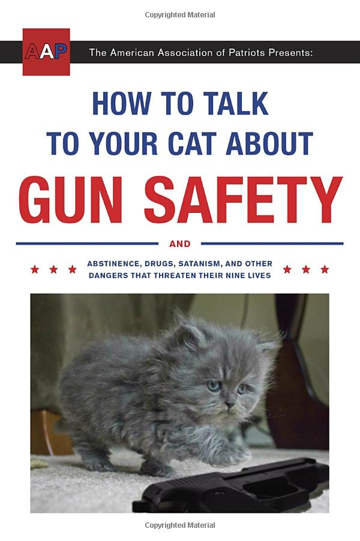

Long gone are the good old days when a cat’s biggest worries were mean dogs or a bath. Modern cats must confront satanists, online predators, the possibility of needing to survive in a post-apocalyptic wasteland, and countless other threats to their nine lives.
For over four decades, the American Association of Patriots have stood at the vanguard of our country's defense by helping to prepare our nation's cat owners for the difficult conversations they dread having with their pets.
Written in a simple Q&A format, How to Talk to Your Cat About Gun Safety answers crucial questions such as, “What is the right age to talk to my cat about the proper use of firearms?” and “What are the benefits of my cat living a lifestyle of abstinence?” and especially “Why does my cat need to use the internet? Can’t he just play with yarn like cats used to do?”